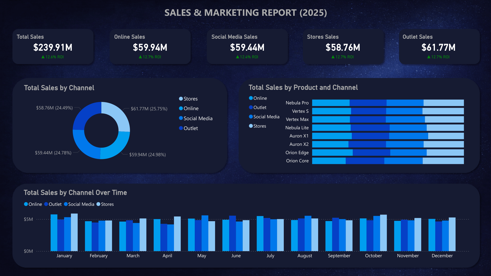
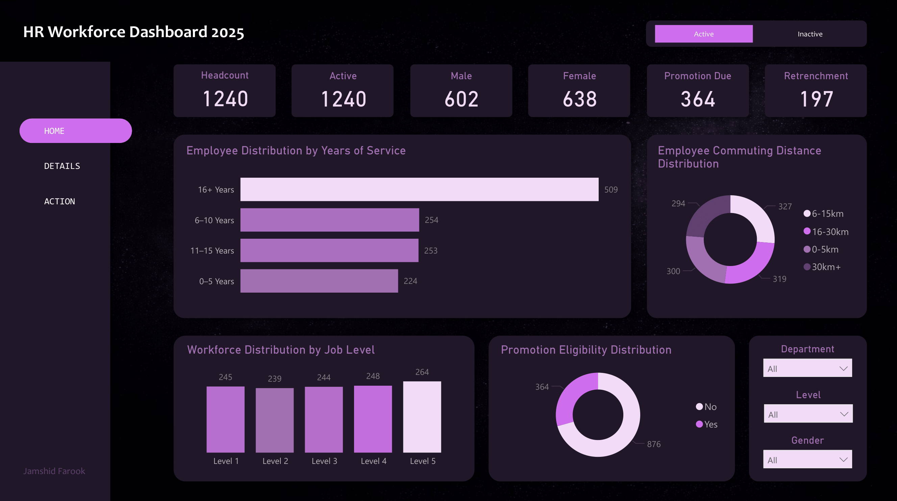
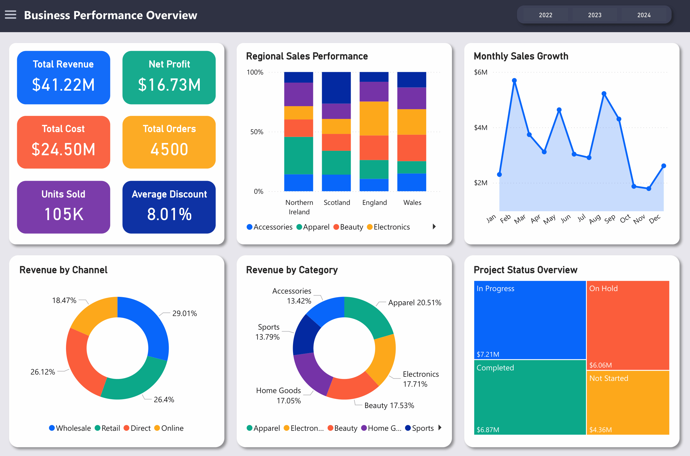
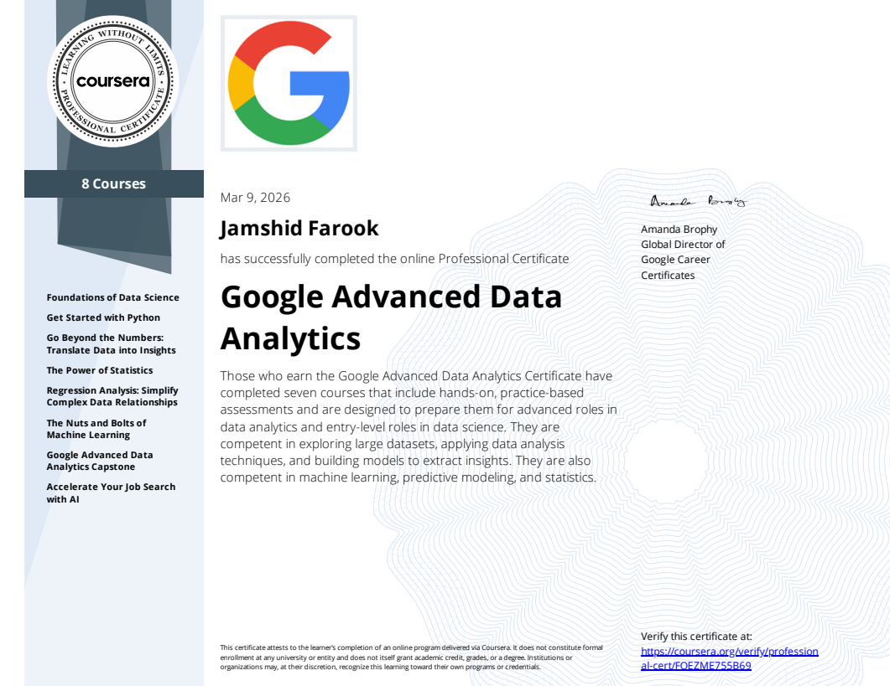

Data Analyst
Jamshid Farook Making data make sense.
Thrissur, Kerala
Data is just noise until someone makes sense of it. That's what I do. I dig into the numbers, find what actually matters, and turn it into something people can act on.

About Me
A little bit about me
I got into data analytics because I genuinely enjoy the puzzle of it, taking a spreadsheet full of chaos and finding the story hiding inside. I've worked on everything from cleaning up messy HR datasets to building sales dashboards from scratch in Power BI.
I picked up my Google and IBM certifications along the way, but honestly the best learning happened while actually building things. I work with clients on Upwork and Fiverr, mostly on dashboards, reporting, and making sense of data that's been sitting around unused.
What I work with
Tools & Skills
Things I've built
Projects



Credentials
Certifications


Always happy to have a chat
Say Hello
Got a dataset you're not sure what to do with? A dashboard that needs rebuilding? Or just want to talk data? I'm around. Drop me a message on LinkedIn or find me on Upwork and Fiverr.